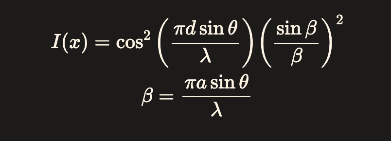

On this website, you can see the visualized result of double slit interference. On the left there is a controls panel allowing you to modify the parameters of the simulation, while on the right there is the actual result. The computations on the backend are handled by the following equation.
To better understand the equation itself, let's break it up into a general envelope function, and an interference term.
E(θ) is our envelope function. This is the general interference pattern we would observe with only one slit present. As we increase the number of slits, the patterns still follow this general shape. The reason for this has to do with how constructive and destructive interference behave between waves.
To explaing(θ), the interference term, first notice that it's this term that provides the higher frequency striping we see. Huygen's Principle says that each point on a wavefront, behaves as a point source for a spherical wave. As the wave crosses each slit, it behaves like a brand new spherical point source. More point sources, mean more interference.
As we increase the number of slits, the number of places waves can colide goes up as well!